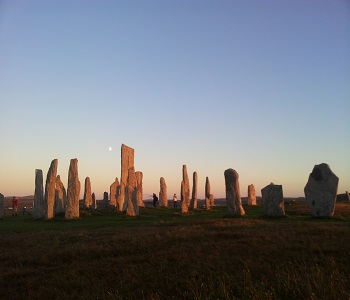
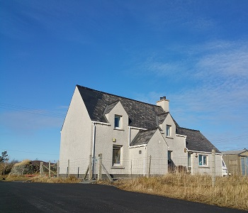
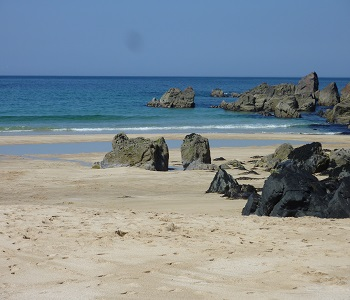

Sightseeing  The Callanish Stones (or "Callanish I", Clachan Chalanais or Tursachan Chalanais in Scottish Gaelic) are an arrangement of standing stones placed in a cruciform pattern with a central stone circle. They were erected in the late Neolithic era, and were a focus for ritual activity during the Bronze Age. They are near the village of Callanish (Gaelic: Calanais) on the west coast of Lewis in the Outer Hebrides, Scotland.
The House  The Callanish Stones (or "Callanish I", Clachan Chalanais or Tursachan Chalanais in Scottish Gaelic) are an arrangement of standing stones placed in a cruciform pattern with a central stone circle. They were erected in the late Neolithic era, and were a focus for ritual activity during the Bronze Age. They are near the village of Callanish (Gaelic: Calanais) on the west coast of Lewis in the Outer Hebrides, Scotland.
Beaches Near Me  The Callanish Stones (or "Callanish I", Clachan Chalanais or Tursachan Chalanais in Scottish Gaelic) are an arrangement of standing stones placed in a cruciform pattern with a central stone circle. They were erected in the late Neolithic era, and were a focus for ritual activity during the Bronze Age. They are near the village of Callanish (Gaelic: Calanais) on the west coast of Lewis in the Outer Hebrides, Scotland.